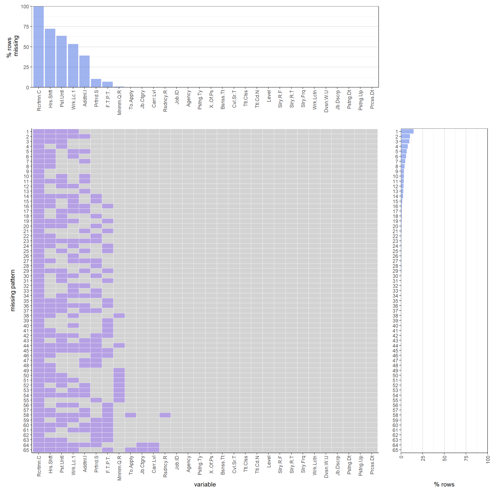

Chapter 4 Missing values
4.1 Graphing

4.2 Analysis
4.2.1 Columns with major missing (>50%)
Following the graph, it is obvious that there are four columns with more than 50% of data missing. The first one, Recruitment Contact, is completely filled with NAs. This column is supposed to store the contact information of recruitment. It might be privacy consideration, or it might be the data collector found they can’t collect this data after they created the data frame. Whichever it was, with full NA in the column, this one should be discarded for future analysis.
Second most missing data is the Hour and Shift column. This column is supposed to store weekly working hours or shifts, but its not possible every job has this info when posting for hiring. Thus this is not a surprising discovery.
The third in the list is the column Post Until. This column is specially commented that a missing value here means the job is posted until fully filled. It is in fact a time stamp here, which means the job offer is being withdrawn without hiring enough people. This is showing around 63% of job positions are fully filled over the span.
The fourth is Work location 1. This column, different from Work location which stores Agency location, stores specific work location of the employees. It is obvious that agency location is always fixed and thus is fully given in data, and the working location of employee is varying thus not frequently recorded. It might because that the job doesn’t have a fixed place to work at, or the working place is TBA. Either way, it makes this column missing over 50% of the values.
It is worth noting that although not over 50%, the fifth in the list also has a quite large portion of data missing compared to other columns. It is the column Additional Information, which stores the additional information about the corresponding job position. Maybe there isn’t much info to post after all.
4.2.2 Frequent pattern of missing data
The most frequent pattern consists of the four major missing columns, taking up over 13% of the total patterns. When adding the fifth most missing column, the second frequent pattern comes and take around 12% of the total patterns. These two are the most dominating patterns.
The following patterns are a combination of the four major missing columns. An interesting pattern here is that only contains the Post Until frequently missing column (disregarding the fully missing column Recruitment Contact). With the fact that this missing value indicates whether the job is posted until fully filled, it shows that there’s a lot of good data for analysis. For the patterns who are missing some of the four major missing information but do have the column Post Until, they are the great data samples to investigate how the missing of those info affects people applying for these jobs?
Other patterns with the missing of elements outside the major four columns are minor in percentage and could possibly be ignored and removed for analysis.
Overall, this data set is pretty good on completeness.